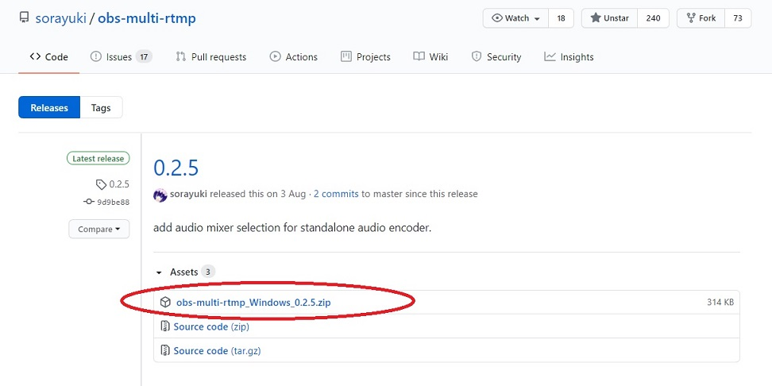
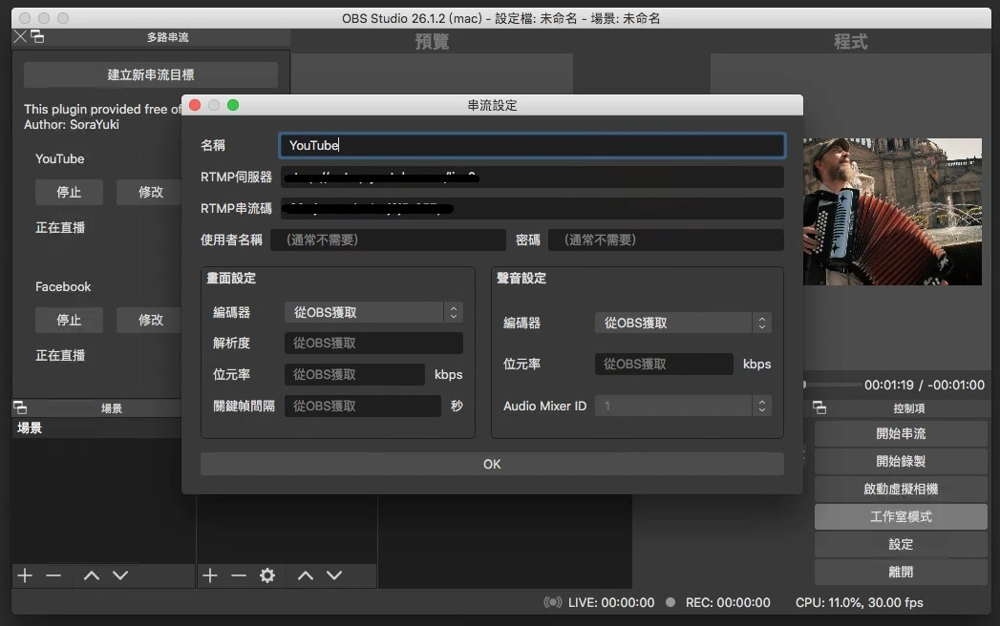

OBS 預設只能直播一個平台
但我需要同時直播 YouTube 和 Facebook
所以這陣子都在搜尋有沒有什麼好的解決方法
例如
- 開兩個 OBS (兩個 OBS 的設定可能會打架)
- 用第三方軟體: Restream, Straas (未來可能改為收費)
- 自架伺服器: Nginx (學習門檻較高)
在心灰意冷的時候看到 OBS Forum 上有人做了 Plug-in
話不多說就趕快開始吧！
Windows 安裝
2021/7/23 更新
0.2.6 版 已可自動安裝在 windows 上，不用手動複製檔案
請點擊下載 obs-multi-rtmp.zip，解壓縮後執行 .exe
下載 obs-multi-rtmp_Windows_0.2.5.zip(0.2.5 是我這個時候的最新版本，你也可以下載之後更新的版本)解壓縮後有兩個資料夾:data,obs-plugins把套件複製到相對應的主程式目錄底下套件主程式 (.dll 檔)將obs-plugins\64bit\obs-multi-rtmp.dll複製到C:\Program Files\obs-studio\obs-plugins\64bit目錄下套件語系 (資料夾)將data\obs-plugins\obs-multi-rtmp複製到C:\Program Files\obs-studio\data\obs-plugins目錄下
打開 OBS，介面左上角會出現一個
多路串流的區塊
你可能需要拉寬那個視窗才看得清楚點擊
建立新串流目標> 輸入名稱、伺服器、串流碼等設定 >OK點擊
開始送直播訊號
Mac 安裝
2021/7/23 更新
該網友的連結已掛，可改使用 此連結
請點擊下載 obs-multi-rtmp_0.2.6.pkg
下載這位 網友 做的obs-multi-rtmp_0.2.5.3.pkg點兩下執行安裝
若顯示無法打開 XXX，因為它來自未識別的開發者
就要去系統偏好設定>安全性與隱私> 點擊強制打開打開 OBS，介面左上角會出現一個
多路串流的區塊
你可能需要拉寬那個視窗才看得清楚點擊
建立新串流目標> 輸入名稱、伺服器、串流碼等設定 >OK點擊
開始送直播訊號
補充
這個套件可以單獨停止或開始某路直播
也可以個別設定解析度和編碼格式
不過要注意電腦效能和網速能承受的量
如果不小心關閉了套件的視窗
可以從 檢視 > 停駐視窗 > 多路串流 (Multiple output) 再次開啟